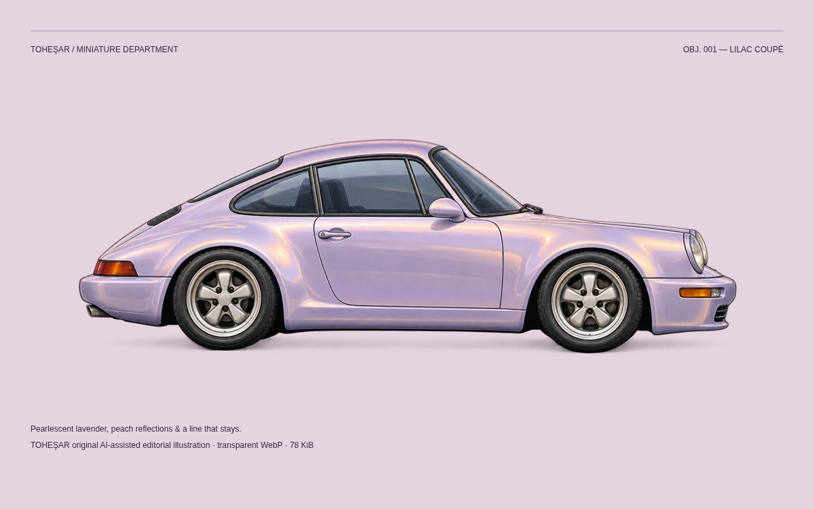
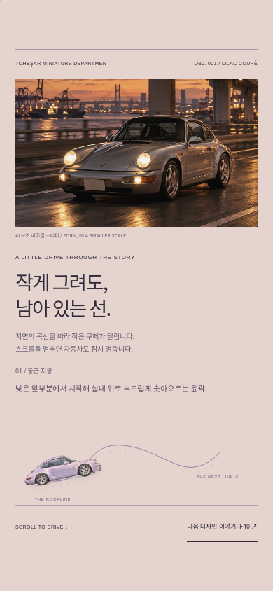
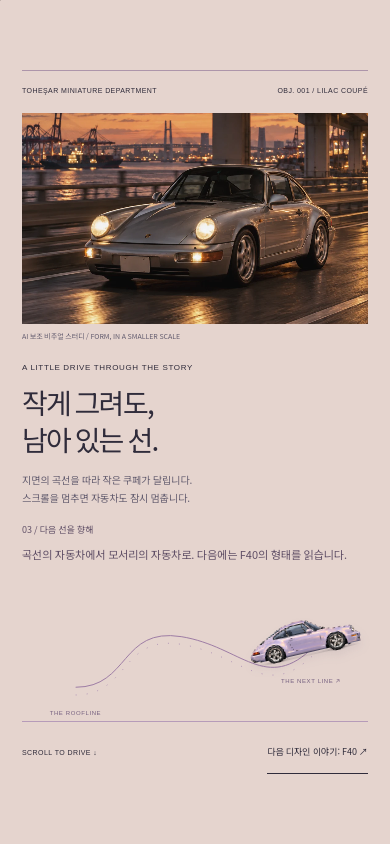

TOHEŞAR / BUILD 005 / REVIEW ROOM
COVER 004 → 저널 → 911 디자인 에세이 → 미니어처 모션 → F40. 실제 구현의 검토 화면입니다. Chromium 및 Playwright WebKit에서 검증했으며 실제 iPhone Safari 실기기 검증은 아직 수행하지 않았습니다.

AI 보조 오리지널 일러스트. 투명 PNG 원본과 78 KiB WebP 보존.

390 × 844 화면의 커버 시작과 스크롤 끝을 기준 커밋과 비교: 다른 픽셀 0개. 커버의 CSS·스크롤 JavaScript·브랜드 SVG와 기존 Yokohama 페이지는 변경하지 않았습니다.
픽셀 비교 기록 ↗